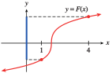
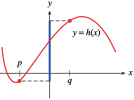
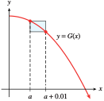
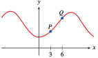
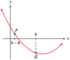

Exercises 1.11 Homework 1.4
¶Compute ratios to answer the questions in Problems 1–4.
1.
Carl runs \(100\) meters in \(10\) seconds. Anthony runs \(200\) meters in \(19.6\) seconds. Who has the faster average speed?
Anthony
2.
On his \(512\)-mile round trip to Las Vegas and back, Corey needed \(16\) gallons of gasoline. He used \(13\) gallons of gasoline on a \(429\)-mile trip to Los Angeles. On which trip did he get better fuel economy?
3.
Grimy Gulch Pass rises \(0.6\) miles over a horizontal distance of \(26\) miles. Bob's driveway rises \(12\) feet over a horizontal distance of \(150\) feet. Which is steeper?
Bob's driveway
4.
Which is steeper, the truck ramp for Acme Movers, which rises \(4\) feet over a horizontal distance of \(9\) feet, or a toy truck ramp, which rises \(3\) centimeters over a horizontal distance of \(7\) centimeters?
In Problems 5-8, compute the slope of the line through the indicated points. On both axes, one square represents one unit.


For Problems 9–14,
Graph each line by the intercept method.
Use the intercepts to compute the slope.


15.
Use the points \((0, 2)\) and \((4, 8)\) to compute the slope of the line. Illustrate \(\Delta y\) and \(\Delta x\) on the graph.
Use the points \((-4, -4)\) and \((4, 8)\) to compute the slope of the line. Illustrate \(\Delta y\) and \(\Delta x\) on the graph.
Use the points \((0, 2)\) and \((-6, -7)\) to compute the slope of the line. Illustrate \(\Delta y\) and \(\Delta x\) on the graph.


16.
Use the points \((0, -6)\) and \((8, -12)\) to compute the slope of the line. Illustrate \(\Delta y\) and \(\Delta x\) on the graph.
Use the points \((-8, 0)\) and \((4, -9)\) to compute the slope of the line. Illustrate \(\Delta y\) and \(\Delta x\) on the graph.
Use the points \((4, -9)\) and \((0, -6)\) to compute the slope of the line. Illustrate \(\Delta y\) and \(\Delta x\) on the graph.

For Problems 17–20, use the formula \(m=\dfrac{\Delta y}{\Delta x} \)
17.
A line has slope \(\dfrac{-3}{4}\text{.}\)
-
Find the vertical change associated with each horizontal change along the line.
\(\Delta x = 4\)
\(\Delta x = -8\)
\(\Delta x = 2\)
\(\Delta x = -6\)
-
Find the horizontal change associated with each vertical change along the line.
\(\Delta y = 3\)
\(\Delta y = -6\)
\(\Delta y = -2\)
\(\Delta y = 1\)
\(-3\)
\(6\)
\(\dfrac{-3}{2} \)
\(\dfrac{9}{2}\)
\(-4\)
\(8\)
\(\dfrac{8}{3} \)
\(\dfrac{4}{3}\)
18.
A line has slope \(\dfrac{5}{3}\text{.}\)
-
Find the vertical change associated with each horizontal change along the line.
\(\Delta x = 3\)
\(\Delta x = -6\)
\(\Delta x = 1\)
\(\Delta x = -24\)
-
Find the horizontal change associated with each vertical change along the line.
\(\Delta y = -5\)
\(\Delta y = -2.5\)
\(\Delta y = -1\)
\(\Delta y = 3\)
19.
Residential staircases are usually built with a slope of \(70\%\text{,}\) or \(\dfrac{7}{10}\text{.}\) If the vertical distance between stories is \(10\) feet, how much horizontal space does the staircase require?
\(\dfrac{100}{7}\) ft \(\approx 14.286\) ft \(\approx 14\) ft \(~3.4\) in
20.
A straight section of highway in the Midwest maintains a grade (slope) of \(4\%\text{,}\) or \(\dfrac{1}{25}\text{,}\) for \(12\) miles. How much does your elevation change as you travel the road?
21.
Choose the line with the correct slope. The scales are the same on both axes.
\(m=2\)
\(m=-\dfrac{1}{2} \)
\(m=\dfrac{2}{3} \)
\(m=-\dfrac{5}{3} \)
IV
III
II
I
22.
Choose the line with the correct slope. The scales are the same on both axes.
\(0\lt m \lt 1\)
\(m \lt -1\)
\(m= \gt 1 \)
\(m=0 \)
Compute the slope of the line in Problems 23-26. Note the scales on the axes.


Each table in Problems 27–30 gives the coordinates of points on a line.
Find the slope of the line.
Fill in the missing table entries.
27.
| \(x\) | \(y\) |
| \(-4\) | \(-14\) |
| \(-2\) | \(-9\) |
| \(2\) | \(1\) |
| \(3\) | \(\) |
| \(\) | \(11\) |
\(\dfrac{5}{2} \)
\(x\) \(y\) \(3\) \(\frac{7}{2}\) \(6\) \(11\)
28.
| \(x\) | \(y\) |
| \(-5\) | \(-3.8\) |
| \(-1\) | \(-0.6\) |
| \(2\) | \(1.8\) |
| \(\) | \(4.2\) |
| \(7\) | \(\) |
29.
| \(x\) | \(y\) |
| \(-3\) | \(36\) |
| \(-1\) | \(\) |
| \(\) | \(12\) |
| \(6\) | \(9\) |
| \(10\) | \(-3\) |
\(-3 \)
\(x\) \(y\) \(-1\) \(\alert{30}\) \(\alert{5}\) \(12\)
30.
| \(x\) | \(y\) |
| \(-10\) | \(800\) |
| \(-2\) | \(\) |
| \(5\) | \(440\) |
| \(\) | \(368\) |
| \(16\) | \(176\) |
31.
A temporary typist's paycheck (before deductions) is given, in dollars, by \(S = 8t\text{,}\) where \(t\) is the number of hours she worked.
-
Make a table of values for the function.
\(t\) \(4\) \(8\) \(20\) \(40\) \(S\) \(\hphantom{0000} \) \(\hphantom{0000}\) \(\hphantom{0000}\) \(\hphantom{0000}\) Graph the function.
Using two points on the graph, compute the slope \(\dfrac{\Delta S}{\Delta t}\text{,}\) including units.
What does the slope tell us about the typist's paycheck?
\(t\) \(4\) \(8\) \(20\) \(40\) \(S\) \(32 \) \(64\) \(160\) \(320\) 
8 dollars/hour
The typist is paid $\(8\) per hour.
32.
The distance (in miles) covered by a cross-country competitor is given by \(d = 6t\text{,}\) where \(t\) is the number of hours she runs.
-
Make a table of values for the function.
\(t\) \(2\) \(4\) \(6\) \(8\) \(d\) \(\hphantom{0000} \) \(\hphantom{0000}\) \(\hphantom{0000}\) \(\hphantom{0000}\) Graph the function.
Using two points on the graph, compute the slope \(\dfrac{\Delta d}{\Delta t}\text{,}\) including units.
What does the slope tell us about the cross-country runner?
In Problems 33–40,
Choose two points and compute the slope of the graph (including units).
Explain what the slope measures in the context of the problem.
33.
The graph shows the number of barrels of oil, \(B\text{,}\) that has been pumped at a drill site \(t\) days after a new drill is installed.
\(1250\) barrels/day
The slope indicates that oil is pumped at a rate of \(1250\) barrels per day.
34.
The graph shows the amount of garbage, \(G\) (in tons), that has been deposited at a dump site \(t\) years after new regulations go into effect.

35.
The graph shows the amount of emergency water, \(W\) (in liters), remaining in a southern California household \(t\) days after an earthquake.
\(-6\) liters/day
The slope indicates that the water is diminishing at a rate of \(6\) liters per day.
36.
The graph shows the amount of money, \(M\) (in dollars), in Tammy's bank account \(w\) weeks after she loses all sources of income.

37.
The graph shows the length in inches, \(i\text{,}\) corresponding to various lengths in feet \(f\text{.}\)

\(12\) inches/foot
The slope gives the conversion rate of 12 inches per foot.
38.
The graph shows the number of ounces, \(z\text{,}\) that correspond to various weights measured in pounds, \(p\text{.}\)
39.
The graph shows the cost, \(C\) (in dollars), of coffee beans in terms of the amount of coffee, \(b\) (in kilograms).
\(4\) dollars/kilogram
The slope gives the unit price of \(\$4\) per kilogram
40.
The graph shows Tracey's earnings, \(E\) (in dollars), in terms of the number of hours, \(h\text{,}\) that she babysits.
Which of the tables in Problems 41 and 42 represent variables that are related by a linear function? (Hint: Which relationships have constant slope?)
41.
\(x\) \(y\) \(2\) \(12\) \(3\) \(17\) \(4\) \(22\) \(5\) \(27\) \(6\) \(32\) \(t\) \(P\) \(2\) \(4\) \(3\) \(9\) \(4\) \(16\) \(5\) \(25\) \(6\) \(36\)
(a)
42.
\(h\) \(w\) \(-6\) \(20\) \(-3\) \(18\) \(0\) \(16\) \(3\) \(14\) \(6\) \(12\) \(t\) \(d\) \(5\) \(0\) \(10\) \(3\) \(15\) \(6\) \(20\) \(12\) \(25\) \(24\)
43.
The table shows the amount of ammonium chloride salt, in grams, that can be dissolved in 100 grams of water at different temperatures.
| Temperature,\(\degree\)C | \(10\) | \(12\) | \(15\) | \(21\) | \(25\) | \(40\) | \(52\) |
| Grams of salt | \(33 \) | \(34\) | \(35.5\) | \(38.5\) | \(40.5\) | \(48\) | \(54\) |
If you plot the data, will the points lie on a straight line? Why or why not?
Calculate the rate of change of salt dissolved with respect to temperature.
Yes, the slope between any two points is \(\frac{1}{2}\text{.}\)
\(0.5\) grams of salt per degree Celsius
44.
A spring is suspended from the ceiling. The table shows the length of the spring, in centimeters, as it is stretched by hanging various weights from it.
| Weight, kg | \(3\) | \(4\) | \(8\) | \(10\) | \(12\) | \(15\) | \(22\) |
| Length, cm | \(25.87 \) | \(25.88\) | \(26.36\) | \(26.6\) | \(26.84\) | \(27.2\) | \(28.04\) |
If you plot the data, will the points lie on a straight line? Why or why not?
Calculate the rate of change of length with respect to weight.
45.
The table gives the radius and circumference of various circles, rounded to three decimal places.
| \(r\) | \(C\) |
| \(4\) | \(25.133\) |
| \(6\) | \(37.699\) |
| \(10\) | \(62.832\) |
| \(15\) | \(94.248\) |
If we plot the data, will the points lie on a straight line?
What familiar number does the slope turn out to be? (Hint: Recall a formula from geometry.)
Yes
\(2\pi\)
46.
The table gives the side and the diagonal of various squares, rounded to three decimal places.
| \(s\) | \(d\) |
| \(3\) | \(4.243\) |
| \(6\) | \(8.485\) |
| \(8\) | \(11.314\) |
| \(10\) | \(14.142\) |
If we plot the data, will the points lie on a straight line?
What familiar number does the slope turn out to be? (Hint: Draw a picture of one of the squares and use the Pythagorean theorem to compute its diagonal.)
47.
Geologists can measure the depth of the ocean at different points using a technique called echo-sounding. Scientists on board a ship send a pulse of sound toward the ocean floor and measure the time interval until the echo returns to the ship. The speed of sound in seawater is about \(1500\) meters per second.
Write the speed of sound as a ratio.
If the echo returns in \(4.5\) seconds, what is the depth of the ocean at that point?
\(\dfrac{1500\text{ meters}}{1 \text{ second}} \)
\(3375\) meters
48.
Niagara Falls was discovered by Father Louis Hennepin in 1682. In 1952, much of the water of the Niagara River was diverted for hydroelectric power, but until that time erosion caused the Falls to recede upstream by \(3\) feet per year.
How far did the Falls recede from 1682 to 1952?
The Falls were formed about \(12,000\) years ago during the end of the last ice age. How far downstream from their current position were they then? (Give your answer in miles.)
49.
Geologists calculate the speed of seismic waves by plotting the travel times for waves to reach seismometers at known distances from the epicenter. The speed of the wave can help them determine the nature of the material it passes through. The graph shows a travel-time graph for P-waves from a shallow earthquake.

Why do you think the graph is plotted with distance as the input variable?
Use the graph to calculate the speed of the wave.
The distances are known.
\(5.7\) km per second
50.
Energy (supplied by heat) is required to raise the temperature of a substance, and it is also needed to melt a solid substance to a liquid. The table shows data from heating a solid sample of stearic acid. Heat was applied at a constant rate throughout the experiment. (Source: J. A. Hunt and A. Sykes, 1984)
| Time (minutes | \(0\) | \(0.5\) | \(1.5\) | \(2\) | \(2.5\) | \(3\) | \(4\) | \(5\) | \(6\) | \(7\) | \(8\) | \(8.5\) | \(9\) | \(9.5\) | \(10\) |
| Temperature, \(\degree\)C | \(19 \) | \(29\) | \(40\) | \(48\) | \(53\) | \(55\) | \(55\) | \(55 \) | \(55\) | \(55\) | \(55\) | \(64\) | \(70\) | \(73\) | \(74\) |
Did the temperature rise at a constant rate? Describe the temperature as a function of time.
Graph temperature as a function of time.
What is the melting point of stearic acid? How long did it take the sample to melt?
51.
The graph shows the temperature of the ocean as a function of depth.

What is the difference in temperature between the surface of the ocean and the deepest level shown?
Over what depths does the temperature change most rapidly?
What is the average rate of change of temperature with respect to depth in the region called the thermocline?
About \(18\degree\)C
0.3 km to 0.4 km
About \(-28\degree\)C per kilometer
52.
The graph shows the average air temperature as a function of altitude. (Figure (b) is an enlargement of the indicated region of Figure (a).) (Source: Ahrens, 1998)

Is temperature a decreasing function of altitude?
The lapse rate is the rate at which the temperature changes with altitude. In which regions of the atmosphere is the lapse rate positive?
The region where the lapse rate is zero is called the isothermal zone. Give an interval of altitudes that describes the isothermal zone.
What is the lapse rate in the mesosphere?
Describe the temperature for altitudes greater than 90 kilometers.
In Problems 53–56, evaluate the function at \(x = a\) and \(x = b\text{,}\) and then find the slope of the line segment joining the two corresponding points on the graph. Illustrate the line segment on a graph of the function.


In Problems 57–62, find the coordinates of the indicated points, then write an algebraic expression using function notation for the indicated quantity.
57.
The length of the vertical line segment on the \(y\)-axis
- 

\((1,F(1)),(4,F(4))\text{;}\) \(~~~~F(4) - F(1)\)
\((r,f(r)),(s,f(s))\text{;}\) \(~~~~f(s) - f(r)\)
58.
The length of the vertical line segment on the \(y\)-axis

- 
59.
-
The increase in \(y\) as \(x\) increases from \(2\) to \(3\)

-
The increase in \(y\) as \(x\) increases from \(a\) to \(b\)

\((2,H(2)),(3,H(3))\text{;}\) \(~~~~H(3) - H(2)\)
\((a,g(a)),(b,g(b))\text{;}\) \(~~~~g(b) - g(a)\)
60.
-
The increase in \(y\) as \(x\) increases from \(-4\) to \(-1\)

-
The increase in \(y\) as \(x\) increases from \(u\) to \(v\)

61.
The shaded area


\((c,s(c)),(d,s(d))\text{;}\) \(~~~~s(c)(d - c)\)
\((x_1,q(x_1)),(x_2,q(x_2))\text{;}\) \(~~~~q(x_2)(x_2 - x_1)\)
62.
The shaded area

- 
In Problems 63–66, find the coordinates of the indicated points on the graph of \(y = f (x)\) and write an algebraic expression using function notation for the slope of the line segment joining points \(P\) and \(Q\text{.}\)
63.


\((1, f (1)), (5, f (5))\text{;}\) \(~~~~\dfrac{f (5) - f (1)}{4}\)
\((-1, f (-1)), (2, f (2))\text{;}\) \(~~~~\dfrac{f (2) - f (-1)}{3}\)
64.

- 
65.


\((a, f (a)), (b, f (b))\text{;}\) \(~~~~\dfrac{f(b) - f(a)}{b-a}\)
\((a, f (a)), (a+\Delta x, f(a+\Delta x))\text{;}\) \(~~~~\dfrac{f(a+\Delta x) - f(a)}{\Delta x}\)
66.

- 